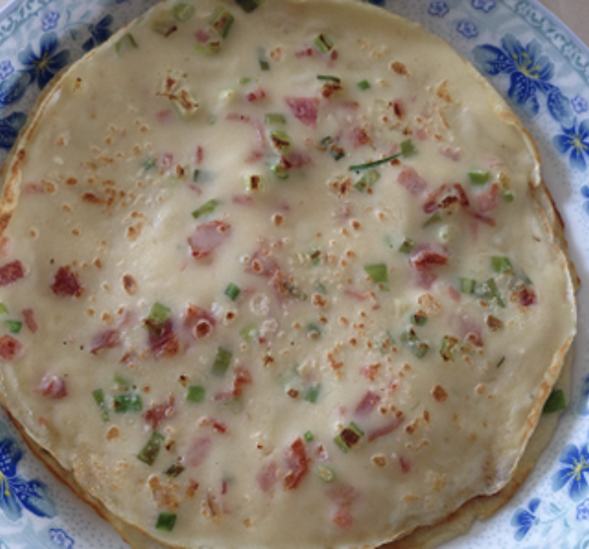

#10 - SAVORY CREPE WITH BACON - 煙肉雞蛋攤餅
This is a Chinese adaption of French food. Believe it or not, I used to eat it when I was a child in China. We did not have bacon or ham back, so we used crispy pork lard (the residue from making lard). It was delicious.

INGREDIENTS:
- 2 cup Flour
- 2 eggs
- 2 ½ cup water
- 1 tsp salt
- White pepper
- 4 pc bacon / 2pc ham
- 4 green onion
Directions:
- Mix flour, salt and pepper in a mixing bowl.
- Crack the eggs in another bowl. Beat it with a fork, and then add the water.
- Fry the bacon until crisp. After it cools, and chop into small pieces.
- Wash and cut the green onion into small pieces.
- Slowly add the egg water mixture into the flour, stir constantly to avoid lumps to form.
- Mix the flour-egg mixture until smooth. (it there are lumps, pass the mixture through a sieve)
- Add the bacon and green onion and stir.
- Heat an 8 to 10-inch flat non-stick frying pan. Brush oil to cover the whole frying pan.
- With one hand holding the handle of the frying pan, pout about ¼ cup of the batter into the frying pan. Turn the frying pan in circular motion while adding the batter. The goal here is to cover the frying pan with a thin layer of batter.
Add a bit more batter at the area not covered by the batter.
- Cook for 1 min until the batter at the edge of the frying pan starts to curl.
- Using a spatula, carefully lift up the crepe from the edge. Move the spatula under the crepe until the whole crepe separates from the frying pan.
- Lift up the crepe and flip it.
- Cook for another 30 sec until the underside has small brown spots.
- Remove the crepe and stack them on a flat plate.
- Repeat step 8-14 until all batter finsihes.
Note:
- These crepes are good for breakfast or lunch.
- Can also add other ingredients to make it more hearty and substantial meal (cooked sausage, sliced onion, pepper, mushroom, corn etc.)